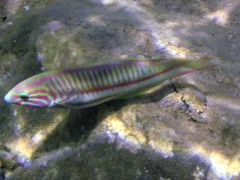

Рыбы-ворчуны относятся к семейству Ворчунов или Хрюкальщиков – Haemulidae, известно около 20 родов и более 130 видов ворчуновых рыб, среди них разнообразные диаграммы, ворчуны, пристипомы и ронки. Этот вид получил название «рыбы-ворчуны» или «хрюкалыцики» из-за способности издавать громкие хрюкающие звуки, возможно имеющие сигнальное значение. Звук извлекается за счет резонирующего действия плавательного пузыря при сокращении окружающих его мышц. Ворчуны – рыбы с формой тела «окуневого» вида – крупная голова, выдвижной рот, на челюстях – мелкие острые зубы. У ворчунов есть сильные глоточные зубы, которыми ворчуны дробят раковины моллюсков. Спинной плавник разделен выемкой на колючую и мягкую части. В колючей части плавника 9—15 острых шипов, в анальном плавнике — 3 шипа. Днём взрослые рыбы, как правило, неактивны, прячутся под коралловыми выступами или в расщелинах. Откладывают пелагическую икру. Молодь популярна для содержания в домашних аквариумах, но взрослые рыбы требуют аквариумов больших объёмов, т.к. максимальная длина рыбы доходит до 60 см.
Спинороговые (лат. Balistidae) — семейство морских рыб отряда иглобрюхообразных. Вместе с семействами таких рыб, как ежи, иглобрюхи, луны, напильники, коробочки они образуют отряд Tetraodontiformes. В этом семействе 11 родов и 40 видов морских рыб. Длина тела этих рыб составляет от 13 см до 1 м. Спинороговые имеют довольно высокое, уплощённое с боков тело. На теле обычно присутствует рисунок из крупных пятен или полос. В окраске встречаются чёрный, голубой, жёлтый, серебристый и белый цвета. Глаза спинорога торчат почти на макушке. Левый и правый глаз могут вращаться независимо друг от друга. Жаберные отверстия в виде небольшой щели расположенны впереди основания грудных плавников, у большинства видов прикрыты твердыми костными пластинами. Во рту у спинорогов полтора ряда зубов: в каждой челюсти есть по 8 пластин, образованных из сросшихсяя зубов, а кроме того, верхняя челюсть несёт второй ряд из 6 зубных пластин, усиливающих зубы переднего ряда. Такими челюстями спинороги легко разгрызают кораллы, моллюсков, морских ежей и крабов. Первый спинной плавник, который в спокойном состоянии сложен и у многих видов незаметен, содержит три больших шипа, из которых самый длинный — первый. Второй шип служит замком. При опасности рыба расправляет плавник, затем второй шип несколько смещается вверх, отчего два первых шипа фиксируются и невозможно сложить спинной плавник, не сломав шипы. Чтобы самой сложить спинной плавник, рыба должна опустить второй шип. Английское название спинороговых «triggerfish» можно буквально перевести как «рыба со спусковым крючком» или «рыба с защёлкой».
К семейству Кефалевых относится более 10 родов и 100 видов. Это очень мало различающиеся по внешнему облику торпедообразные красивые рыбы, имеющие обычно серебристую окраску. Их тело покрывает крупная циклоидная (иногда ктеноидная) чешуя, очень плотно сидящая у одних видов и легко опадающая у других. Боковая линия у кефалей неполная или её нет. Кефали имеют два широко расставленных спинных плавника, первый из которых содержит обычно только четыре колючих луча. Голова у них небольшая, но широкая, уплощенная сверху вниз и покрытая чешуей; рот маленький, зубы очень мелкие, иногда сидящие на губах; глаза у некоторых видов имеют хорошо развитое жировое веко. Почти все кефали относятся к числу морских рыб, переносящих, однако, значительное опреснение и проникающих в солоноватые и совсем пресные воды. Диапазон солености, при которой могут быть встречены представители этого семейства, варьирует от 0 до 35°/00 (нормальная морская соленость) и даже до 83°/00 в засолонённых лиманах. Среди кефалей есть и настоящие пресноводные виды, никогда не выходящие в море. К ним принадлежат, в частности, Кефали-хотуро (Joturus), живущие в реках и озерах Кубы, Центральной Америки и Мексики, кефали-цестреты (Cestraeus), встречающиеся во внутренних водоёмах Индонезии и Филиппинских островов, жёлтоглазые кефали Австралии (Aldrichetta forsteri).

Кузовковые (Ostraciidae) — семейство рыб из отряда Иглобрюхообразные (Tetraodontiformes). Длина тела до не превышает 50 см, растут рыбы медленно. Тело покрыто своеобразным «панцирем», который состоит из сросшихся шестиугольных костных пластин, и в котором имеются отверстия для глаз, рта, жабр, плавников и хвоста. Хвостовой плавник голый. Над глазами, и за анальным плавником часто имеются похожие на рога отростки. Глаза могут двигаться независимо друг от друга. Для них также характерен своеобразный крепкий «клюв», образованный сросшимися зубами. Зубы конические, мощные. Чешуя на теле кузовков отсутствует, голая кожа покрыта слизью, которая содержит яд острациотоксин. В состоянии возбуждения, стресса или опасности, яд в большом количестве выделяется в воду. В открытом море для окружающих рыб это не представляет большой опасности, но при содержании этих рыб в аквариумах, в ограниченном объёме воды, данная особенность может привести к гибели как самой рыбы, так и содержащихся вместе с ней других рыб. Также данный яд действует на рыб сильнее, чем на беспозвоночных. Есть сообщения, что после специальной обработки кузовков употребляют в пищу, но промыслового значения этот вид не имеет.Окраска может быть самой разнообразной, преимущественно яркая, часто с округлыми пятнами различных размеров. У некоторых выражен половой диморфизм, а также имеет место изменение окраски с возрастом рыбы. Обитают в Индийском, Тихом и Атлантическом океанах, широко распространены в Красном море, в водах Аравийского моря (кроме Оманского залива) и восточного побережья Африки до Гавайев и островов Туамоту и Риукуиу, на Большом Барьерном рифе. На севере распространены до южного побережья Японских островов. Встречаются преимущественно над песчаным и каменистым дном мелководных защищённых лагун и прибрежных рифов на глубине до 30 метров. В галерее сайта – это единственные рыбы, фотографии которых были сделаны с берега. Питаются преимущественно беспозвоночными — оболочниками, голотуриями, морскими ежами, морскими звёздами, крабами, моллюсками, выдувая их из грунта струёй воды, выпущенной изо рта. В рацион ряда видов также входят водоросли и губки, а Ostracion tuberculatus питается исключительно растительной пищей. Плавают медленно, используя для этого только анальный и спинной плавники и лишь в случае крайней необходимости совершают движения хвостом. Проявляют агрессию по отношению к представителям своего или схожих видов. Брачные игры устраивают открыто, не опасаясь хищников. Жёсткий скелет этих рыб не позволяет раздуваться от икры, поэтому они откладывают немного икринок. Икра пелагическая (терм.), так же, как и личинки — плавают в толще воды. Достигнув длины в 10 мм, малёк имеет кубические очертания и оседает на дно. С возрастом тело рыб постепенно начинает удлиняться и становится более прогонистым. Характерно изменение пола. Повзрослев, молодь превращается в самок, которые в свою очередь, через некоторое время, становятся самцами.
Кудрепёровые – лучепёрые окунеобразные рыбы семейства Cirrhitidae. Это небольшого размера рыбы своим видом напоминающие скорпеновых. В спинном плавнике 10 шипов с усиками на концах и 11-17 мягких лучей. В анальном плавнике 5-7 мягких лучей. В позвоночнике 26-28 позвонков. Кроме того, нижние 5-7 лучей в больших грудных плавниках не ветвистые и довольно толстые, кожные мембраны между ними с глубокой вырезкой. Голова без шипов, чешуя ктеноидная (терм.) или циклоидная (терм.). Максимальная длина, до которой вырастают взрослые особи, не более 55 см. Кудрепёровые – это, как правило, небольшие и очень яркие красочные рыбы с контрастными пятнами и полосами на голове и туловище. Обычно, поджидая добычу, эти рыбы неподвижно лежат на дне среди камней или между ветвей кораллов, удерживаясь на месте мощными лучами грудных плавников. Все они хищники и питаются ракообразными и рыбой. Часто держатся в местах с сильным течением или прибоем. Такое поведение вместе с маскирующей окраской одновременно является эффективной защитой от хищников. Лишь один из 35 известных видов кудрепёровых рыб питается планктоном, отрываясь для этого со дна в толщу воды. Большинство этих рыб обитает в прибрежной зоне, на скалах и коралловых рифах и лишь несколько видов опускаются до глубины 30-40 метров.Молодь кудреперовых может сильно отличаться по окраске от родителей, и также обитает в расщелинах или среди ветвей кораллов. У некоторых видов самцы активно защищают свою территорию и содержат «гаремы» из нескольких самок. Виды, у которых изучено размножение, откладывают донную икру. Встречаются кудрепёровые рыбы в тропических и субтропических водах всех океанов. Хорошо адаптируются в аквариумах. Несмотря на небольшие размеры, эти рыбы используются местным промыслом, поскольку их мясо считается деликатесом.
Семейство губановых очень многообразно — оно включает 69 родов и насчитывает 505 видов. Среди них имеются и карлики – Губанчики (Labroides), не превышающие 6—7 см в длину, и гиганты – Хейлинусы (Cheilinus undulatus), достигающие 2,5 м при весе до 200 кг. Это рыбы с удлиненным или овальным телом, которое покрывает крупная циклоидная (терм.) чешуя. Сравнительно небольшой рот их обычно выдвижной, а губы очень толстые и мясистые (отсюда и название семейства), со складками на внутренней стороне. Зубы на челюстях, как правило, сильные, конической или резцевидной формы, иногда увеличенные в виде клыков. Расцветка губановых очень разнообразная и яркая. Рыбы могут сочетать в окраске всё многообразие цветовой гаммы. У многих видов цветовая гамма изменяется в течение жизни, молодь резко отличается от взрослой особи. Также различен окрас у самок и самцов. Часто самки менее яркие и могут иметь совершенно другой окрас нежели самцы, из-за чего долгое время ученые относили рыб одного вида к разным.Интересный факт: окраска наблюдается только у живых губановых рыб, после смерти она быстро исчезает. Все губановые обитают в прибрежных районах, у каменистых и заросших водорослями берегов и у коралловых рифов. Питаются в основном моллюсками, дробя их крепкими зубами, и другими донными беспозвоночными. Есть виды, которые питаются и растительной пищей. Губаны живут одиночками, каждая особь занимает собственный территориальный участок, который она охраняет от других губановых. У всех рыб этого семейства есть интересная особенность — ночной сон, в который они впадают с наступлением темноты. Многие из них на ночь зарываются в песок, а некоторые, подобно рыбам-попугаям, окутывают себя слизистым коконом.
Ящероголовые рыбы представляют отдельное семейство Synodontidae отряда миктофообразных (Myctophiformes). К этому отряду относятся глубоководные хищные рыбы, близки к сельдеобразным, отличаясь от них рядом анатомических особенностей в строении черепа. Тело ящероголовых рыб длинное и тонкое, почти цилиндрической формы. Над концом анального плавника имеется небольшой жировой плавничок. В плавниках отсутствуют колючие лучи. Для всех характерен большой рот с хорошо развитыми зубами конической и клыковидной формы. Довольно большие глаза снабжены вертикальными жировыми веками и расположены у верхнего переднего края головы, очень близко друг к другу. Слегка приплюснутая, с большим ртом, покрытая чешуей голова этих рыб, действительно очень похожа на голову ящерицы. Общий тон тела большинства видов светло-коричневый, иногда с зеленоватым или красноватым оттенком, на боках имеются обычно более тёмные или яркие пятна, широкие поперечные или узкие продольные полосы. Такая окраска делает этих рыб почти незаметными на фоне дна морских мелководий. Если что-либо привлекает внимание лежащей на дне рыбы, она приподнимает голову и переднюю часть тела, готовясь схватить добычу, если же оказывается, что ей грозит опасность, она мгновенно зарывается в песок, оставляя на его поверхности только глаза.Ящероголовые рыбы широко распространены в тропических и теплых морях всех океанов, но, по-видимому, нигде не бывают особенно многочисленны. Некоторые из них обитают на довольно больших глубинах – до 300—350 м и более. Большинство видов, однако, обитает у берегов, в районах с илистым или песчаным грунтом, близ скал и рифов. Известны 3 или 4 рода с 33—34 видами. Большинство из них невелики и не превышают в длину 25—30 см. Представители некоторых видов, однако, достигают значительно больших размеров, до 40—50 см. Особенно широко распространен короткорылый ящероголов (Trachinocephalus myops), встречающийся у западных берегов Тихого океана от Хоккайдо и Гавайских островов до Австралии и островов Океании, в Индийском океане вдоль берегов Южной Азии и Восточной Африки и в Атлантическом океане в водах острова Св. Елены и у островов Центральной Америки и Флориды. Род Зауриды (Saurida, 7 видов) заселяет прибрежные воды индо-тихоокеанской области, и один из его видов, зауридаэсо (S. undosquamis), недавно (до 1970 г.) проник из Красного моря в Средиземное море. Наибольшее количество видов содержит род длиннорылых, или настоящих, ящероголовов (Synodus), 5 видов которого обитают у берегов Японии, 3 чисто австралийских, 9 живут у западных берегов Америки от Калифорнии до Перу, 5— у восточных берегов Америки от мыса Код и Флориды до Бразилии и 1 (Synodus saurus) — у берегов Южной Европы, в Средиземном море. Ящероголовы встречаются как у открытых берегов океана, так и в окраинных морях и в связанных с морем континентальных солоноватых и соленых водоемах, обитая подчас в очень широком диапазоне температуры (от 8 до 32° С) и солености (от 14 до 37 и даже до 60и/00) (например, Synodus foetens). Питаются ящероголовы мелкими беспозвоночными и молодью рыб, но некоторые из них ведут хищный образ жизни. Так, например, преимущественно рыбой питается уже упоминавшийся обыкновенный ящероголов (Synodus foetens), хотя в его рацион входят также мелкие ракообразные и черви. Этот вид переходит на питание рыбой довольно рано, достигнув длины всего 3, 5 см. При этом он потребляет и своих собратьев, если они хоть немного уступают ему по величине; например, в желудке малька длиной 4 см был обнаружен трехсантиметровый малек этого же вида. Мясо ящероголовов невысоких вкусовых качеств, тем не менее некоторые виды имеют довольно существенное значение в промысле донных рыб в Желтом, Восточно-Китайском и Южно-Китайском морях. Таковы, например, достигающие 40—50 см длины и веса 1,1 кг зауриды: эсо (Saurida undosquamis), тумбиль (Saurida tumbil), короткоперая (Saurida elongata), а также красный ящероголов (Synodus variegatus). Значительная часть японского улова этих рыб перерабатывается в рыбную пасту «камабоко».
К этому семейству относятся рыбы с очень удлиненным телом в виде толстой иглы (морские иглы) или с совершенно своеобразной формой тела, напоминающей шахматную фигуру коня, с наклоненной к туловищу головой и сворачивающимся цепким хвостом (морские коньки). У морских игл длинный хвоста хвостовой плавник небольшой или его нет совсем, брюшные плавники также отсутствуют. Морские иглы (лат. Syngnathus) – это род морских рыб семейства Игловых (Syngnathidae), входят в отряд колюшкообразных. Известно более 150 видов морских игл и около 30 видов морских коньков. Размеры взрослых рыбок от 2,5 до 60 см (иглы) и от 4 до 20 см (коньки). Морские иглы и морские коньки обитают в тропических и умеренных морях у песчаных берегов с морской травой зостера (Zostera), иглы также встречаются на каменистых мелководьях, в зарослях водорослей, на кораллах. Они способны изменять свою окраску в зависимости от фона окружающей среды, и вообще их окраска очень изменчива: красная, лиловая, бурая, ярко-зеленая, серая с различными комбинациями пятнистости до почти белой среди кораллов. Имеются и пелагические виды, например крупная морская игла Саргассова моря (Entelurus aequoreus), встречающаяся повсюду в открытом Атлантическом океане среди плавучих саргассовых водорослей, или мелкая пелагическая черноморская игла (Syngnathus schmidti). Форма тела, окраска, медленно качающиеся движения морских игл и коньков превосходно имитируют окружающие их заросли и позволяют этим малоподвижным рыбкам успешно скрываться от врагов. Мимикрия доведена до совершенства у зеленовато-бурого австралийского морского конька-тряпичника (Phyllopteryx eques), у которого очертания тела разбиты многочисленными длинными шипами и лентообразными кожистыми выростами. Когда они колеблются в воде, рыбу почти невозможно отличить от веточки саргассовой водоросли. Питаются морские иглы и коньки в основном мелкими планктонными рачками. Трубчатое рыло действует как пипетка: когда резко раздуваются щеки, добыча быстро втягивается в рот с расстояния до 4 см. Заметив небольшого рачка, морской конек разглядывает его секунду или две и потом, повернув свое рыло в удобное положение, внезапно втягивает рачка и проглатывает его. Молодые морские коньки способны питаться по 10 часов в день и за это время съедают до 3600 мелких жаброногих рачков-артемий (Artemia salina). Процесс размножения сложный. Заботится о потомстве всегда самец. У морских игл после величавого танца ухаживания с партнером самка обвивается вокруг него и откладывает икру небольшими порциями в желобок или в выводковую сумку на нижней стороне тела самца. При этом икра оплодотворяется. В зависимости от вида морской иглы икринки прикрепляются под брюшком или под хвостом. Они могут быть совершенно открыты, например у змеевидной морской иглы (Nerophis ophidion), или прикрыты складками кожи, отходящими от боков тела: края этих складок сходятся, образуя сумку длиной около одной трети всей длины рыбы. Такое устройство имеется у обыкновенных морских игл рода Syngnathus. Самец вынашивает икру, пока не выведутся мальки. Даже после вылупления мальков самец некоторое время носит их в сумке. Изгибая тело дугой кверху, он открывает сумку, и мальки выходят из нее, но в случае опасности опять прячутся туда. У морских коньков сумка устроена иначе. Она всегда находится под хвостом и замкнута, имеется лишь небольшое отверстие в передней части сумки для откладки через него икры и для выхода мальков, когда они выведутся из икры. С наступлением периода размножения эта сумка утолщается и пронизывается кровеносными сосудами; так она подготавливается к приему икры и питанию зародышей. В это же время клоака самки несколько вытягивается и образует половой сосочек, который служит органом для введения ее икринок в сумку самца. После откладки самкой икринок самец содержит развивающуюся икру в своей сумке. Всего известно около 50 видов обыкновенных морских игл. Цепкохвостая морская игла (Amphelikturus dendriticus) с Багамских островов является как бы промежуточным звеном между иглами и коньками. Выводковая сумка у нее частично сросшаяся, промежуточного типа между иглами и коньками. Хвост цепкий, как у коньков, но еще сохранивший хвостовой плавник, как у морских игл, голова несколько загнута вниз, составляет с осью тела угол до 45°. Известны и бесперые морские иглы (Penetopteryx). Они не имеют плавников, живут среди обломков кораллов, зарываясь в коралловый песок на глубину до 30 см.
возвращение риф красного моря под водой